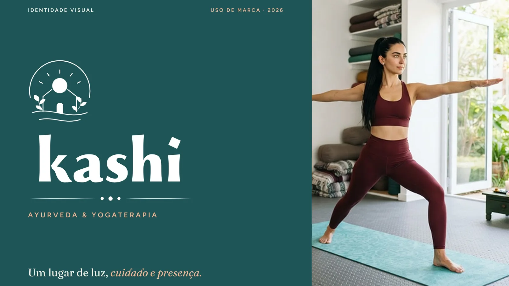
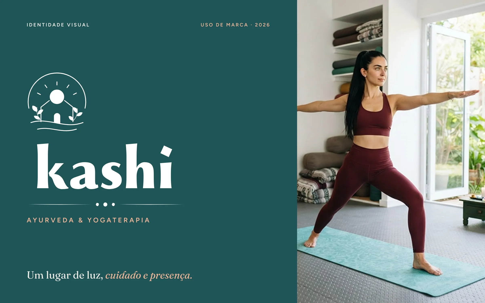
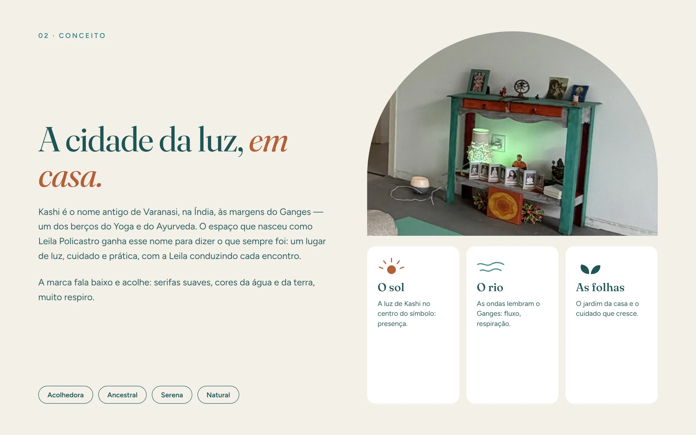
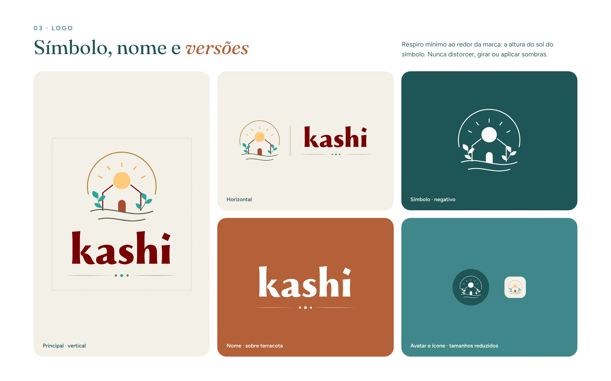
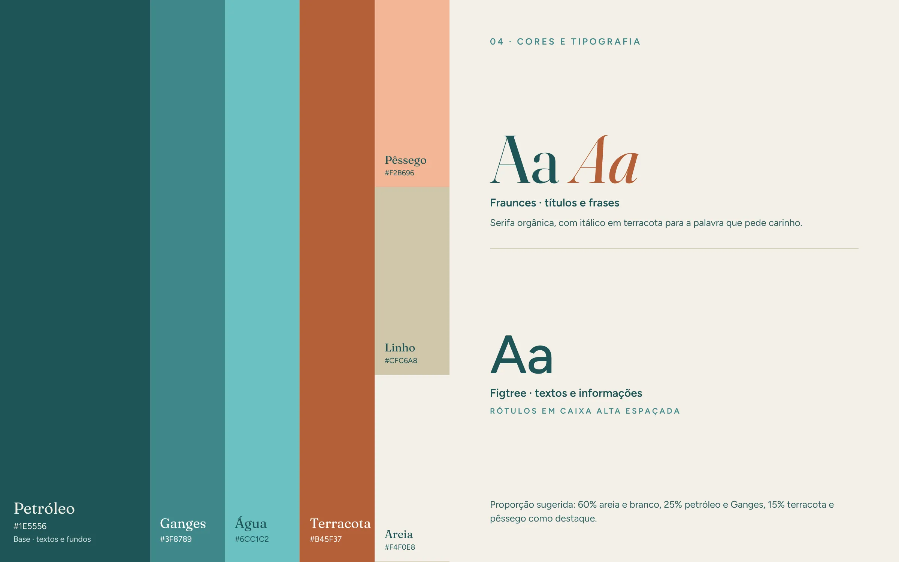
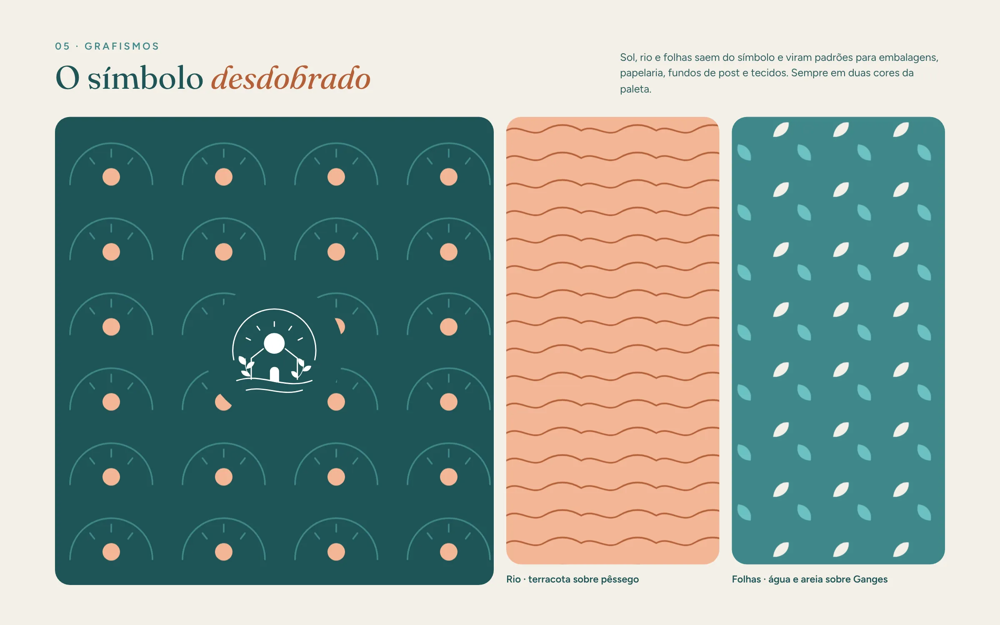
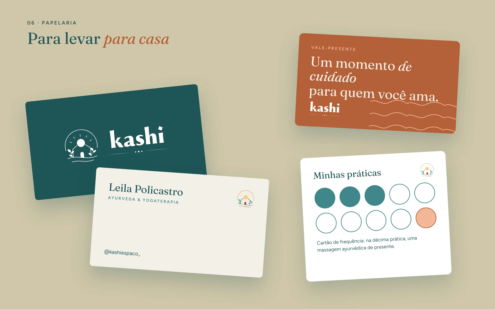
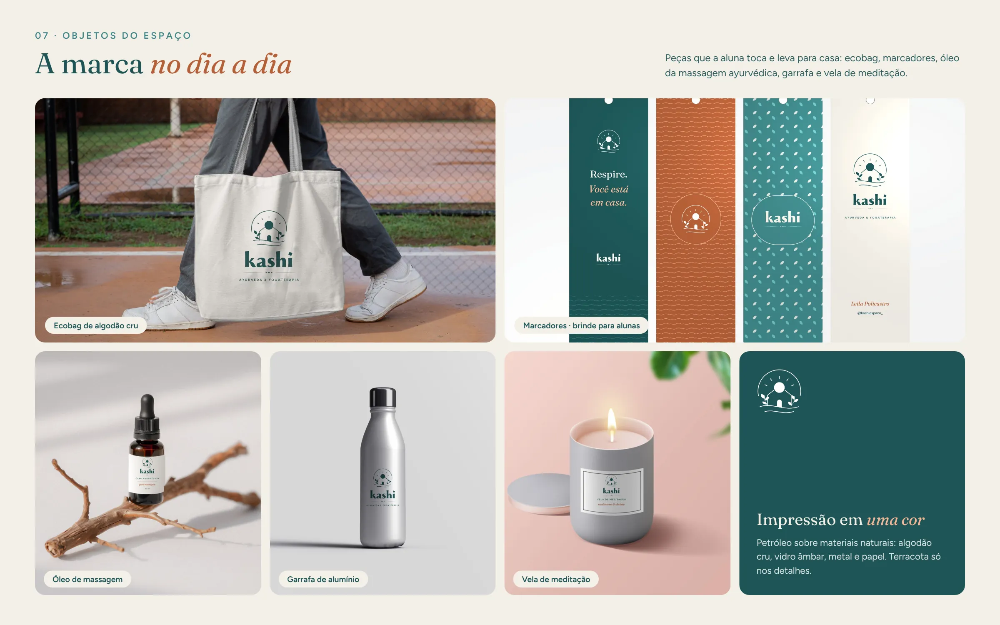
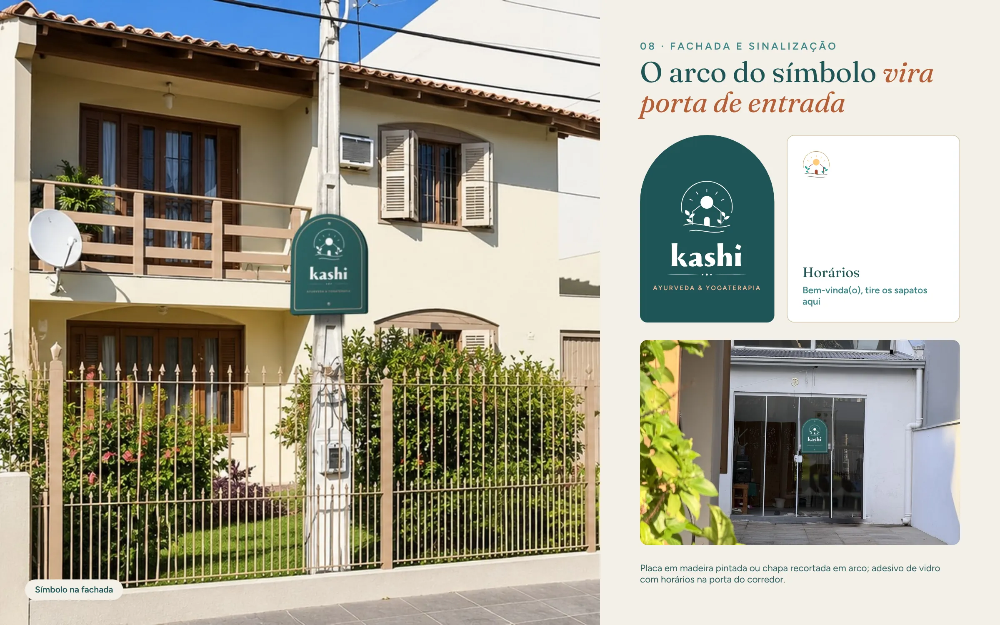
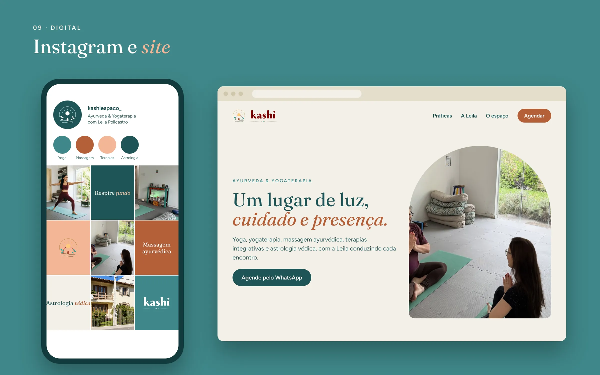

Kashi
Identidade visual e manual de uso de marca para um espaço de Ayurveda e Yogaterapia: um lugar de luz, cuidado e presença.

O desafio
Dar um novo nome a um espaço que já tinha alma.
O espaço nasceu como Leila Policastro e passou a se chamar Kashi, o nome antigo de Varanasi, na Índia, às margens do Ganges: um dos berços do Yoga e do Ayurveda.
A nova marca precisava dizer o que o lugar sempre foi, com a Leila conduzindo cada encontro, e funcionar em tudo o que as alunas veem e tocam: do Instagram à fachada, da papelaria à vela de meditação.
Conceito
“A cidade da luz, em casa.”
O símbolo reúne o sol, a luz de Kashi no centro, as ondas do rio Ganges e as folhas do jardim da casa. A marca fala baixo e acolhe: serifas suaves, cores da água e da terra, muito respiro.
Manual de uso de marca
Nove pranchas, do conceito ao digital









Sistema visual
Cores da água e da terra
Petróleo
#1E5556
Ganges
#3F8789
Água
#6CC1C2
Terracota
#B45F37
Pêssego
#F2B696
Linho
#CFC6A8
Areia
#F4F0E8
Tipografia
Fraunces e Figtree
Fraunces, uma serifa orgânica, nos títulos e frases, com itálico em terracota para a palavra que pede carinho. Figtree nos textos e informações.
Proporção
Muito respiro
60% areia e branco, 25% petróleo e Ganges, 15% terracota e pêssego como destaque.
Entregas
Uma marca do Instagram à porta de entrada
- Conceito
- Logo e versões
- Paleta e tipografia
- Grafismos
- Cartão de visita
- Vale-presente
- Cartão de frequência
- Ecobag e brindes
- Rótulos
- Fachada e sinalização
- Site
Quer uma marca assim para o seu negócio?
Vamos conversar sobre o seu projeto.